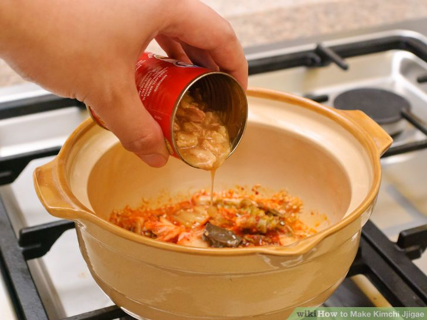

Kimchi Jjigae is a popular stew in Korea.
The word kimchi refers to food that has been fermented or pickled.
The pickling of the vegetables started as a way to preserve vegetables and
other foods during winter.
The word jjigae is Korean for the word stew.
Kimchi jjigae is a variety of stew-like Korean dishes, which are made
with kimchi and other ingredients such as onions, diced tofu, seafood, pork, and scallions.
Although pork and seafood are generally not used in the same recipe.
This stew is very simple to make once the correct ingredients and materials have been purchased.
Purchase your ingredients from an authentic Korean or Asian market
to ensure you have the correct products at the lowest price.
The clay pot used heats much more quickly than traditional pots so prepare
and separate ingredients beforehand.
This is the perfect traditional ethnic dish to try for even the most inexperienced chef.
Place clay pot over medium flame and allow to properly heat for a few minutes before adding ingredients.
Once the clay pot is heated, add two table spoons of vegetable oil.

Add one teaspoon of sesame seeds,spread evenly within the clay pot,and allow the to toast into a golden brown color.

Add one cup of kimchi.Depending on whether kimchi is homemade or store bought,you may need to cut up kimchi into smaller pieces.

Place cover on pot and allow kimchi to reducce to about a half a cup,approximately 4 minutes.Stir occasionally.

Add 1/2 a teaspoon of sugar and gently mix into the kimchi.

Open one can of tujna fish and add the entire contents into the pot.Gently mix in with the sugared kimchi and sesame seeds.
Add minced garlic,crushed red pepper,and one portion of the chopped green onions in the pot strring gently until all ingredients are properly mixed.
Generously add chicken broth into the pot.Around 28 to 30 ounces should suffice.

Turn up heat to medium high,cover the pot and bring to a boil.
Once stew is boiling, add a pinch of salt and remaining green onions.

Add chopped tofu to boiling pot and stir gently until all contents are properly mixed.
Let stew cook uncovered for about 10 minutes.

Crack egg on top of boiling soup and then turn off the stove.
Depending on your preferences, you may choose to serve soup upon cracking the egg or allow it to fully cook.
Sprinkle with sesame oil before serving and enjoy!
After that, you have a delicious food.

| Contact Us | Follow Us |
| Phone Number:0942011231231 Email:foodparadise@gamil.com |
Copyright © 2017,Food Paradise. All Rights Reserved.